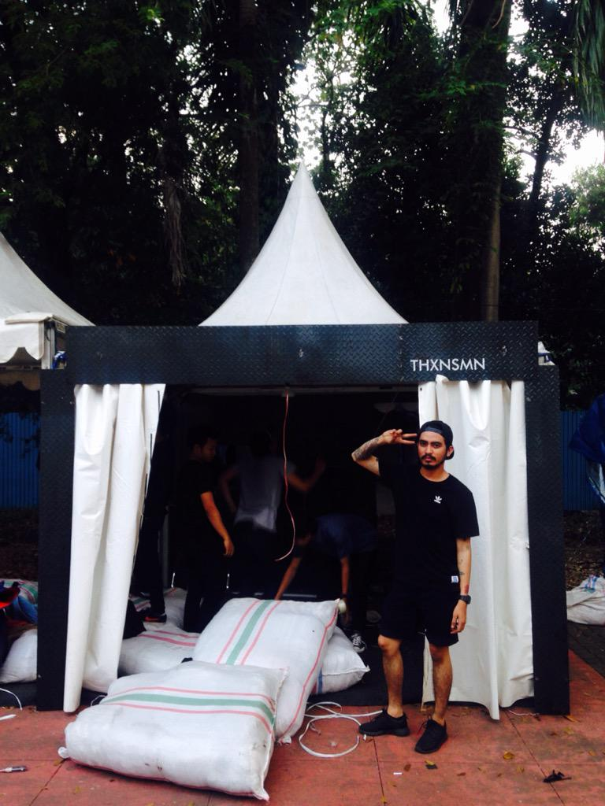
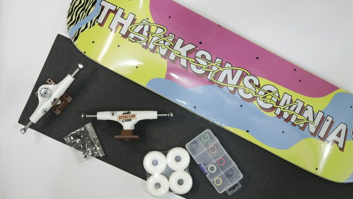
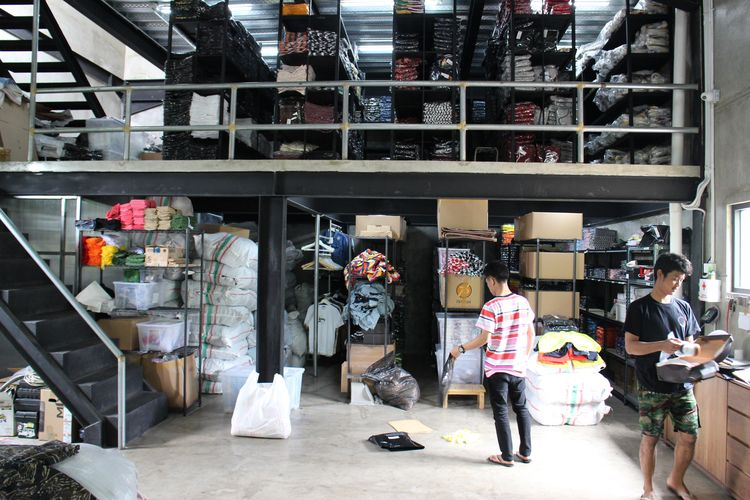
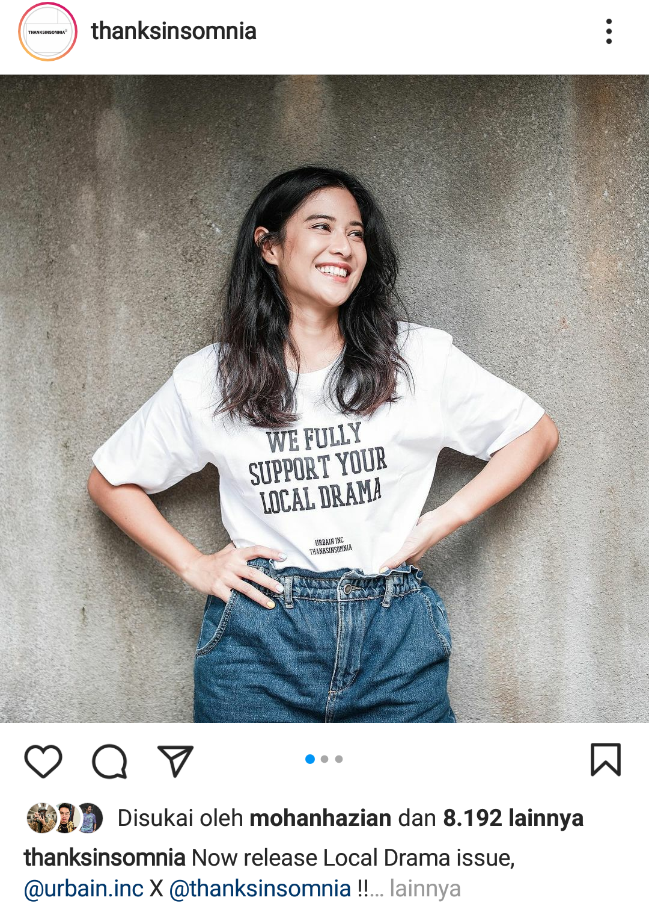

History
History01
Didirikannya Brand Thanksinsomnia
02
Merintis dari sebuah kontrakan
03
Produk Pertama Brand ThanksInsomnia
04
Berkeinginan memiliki kantor sendiri & akhirnya terwujud
05
Bersedia belajar dari orang lain
06
Pemasaran utama produk melalui Sosial media
Thanksinsomnia pertama kali di dirikan pada tahun 2012 silam oleh Mohan Hazian. Mohan mendapatkan nama Thanksinsomnia itu dari Twitter yang sebelumnya sudah ada sejak tahun 2010 lalu, Thanksinsomnia yang sebenarnya sebuah akun Twitter Bot. Dan yang mempunyai nama akun Twitter Bot Thanksinsomnia tersebut adalah Agung Firdaus, yang hingga akhirnya ia ikut turut bergabung bersama brand Thanksinsomnia.
Thanksinsomnia diambil dari bahasa latin dan jawa yang disempurnakan ke bahasa Rusia dan memiliki arti jiwa muda yang berapi-api.
Dulu sejak saat itu, Mohan mulai merintis sejarah bersama Thanksinsomnia dari sebuah kontrakan dengan konsep meja yang menempel ke dinding, hingga akhirnya kontrakannya mulai dipenuhi oleh barang-barang produk dari Thanksinsomnia, Mohan pun mulai pindah ke sebuah rumah di BSD dan menerapkan konsep yang sama seperti sebelumnya dan bisa menampung barang lebih banyak. Mulai dari situlah, Mohan mulai nabung untuk meniti karirnya bersama Thanksinsomnia dan membangun office baru yang sekarang kita ketahui. Pada 2011, Mohan masih mengerjakan produksi milik orang lain. Karena sebelumnya, Mohan sebenarnya kerja di sebuah konveksi milik orang lain dan akhirnya lepas membuat brand in-house Thanksinsomnia.
Mohan Hazian (Founder ThanksInsomnia) merilis produk pertama Thanksinsomnia berupa tas papan skateboard yang terus kemudian ia titipkan di sebuah toko skate shop milik temannya, dan akhirnya mulai banyak permintaan dari produk tersebut, dari situ lah Mohan memulai perjalanan bersejarahnya bersama Thanksinsomnia dan mulai memproduksi produk tersebut dengan model-model yang baru.
Mengintip sejarah Thanksinsomnia itu sendiri, Mohan pun pernah mengucapkan bahwa “Gung, suatu saat gua bakal punya kantor, dan lu bakal jadi orang di kantor di dalamnya, dan kita bakal kerja bareng.” Akhirnya mereka pun sampai sekarang kerja bersama di Thanksinsomnia. dengan menerapkan konsep yang sama seperti sebelumnya dan agar bisa menampung barang lebih banyak. Mulai dari situlah, Mohan mulai nabung untuk meniti karirnya bersama Thanksinsomnia dan berhasil membangun office baru yang sekarang kita ketahui
Sejarah Thanksinsomnia kemudian berlanjut memproduksi sebuah kemeja full print dan
penjualan pun mulai terlihat dan orang banyak yang minat. Sejak saat itu, Mohan mulai
daftarin nama Thanksinsomnia ke badan hak paten. Jauh sebelum bertemu dengan Thanksinsomnia,
Mohan bertemu dengan orang-orang yang mengajarkan banyak hal, orang tersebut bernama Ferdi.
Mohan banyak mendapatkan pelajaran dari Ferdi dan kemudian Ferdi pun ikut turut bergabung
bersama Thanksinsomnia yang hingga sekarang memiliki anggota berjumlah 10 orang.
Saat pertama kali ikut event Jakcloth 2015, booth Thanksinsomnia di penuhi oleh banyak orang yang
antri ingin membeli produk dari Thanksinsomnia. Pada tahun tersebut juga sejarah Thanksinsomnia mulai
berkolaborasi dengan brand lain seperti Queenbeer dan Shining Bright dan akhirnya membuka toko bersama.
Namun, banyak orang yang menganggap bahwa ketiga brand tersebut “brand kubu-kubuan (trio-brand)”. Namun,
fakta sebenarnya adalah ketiga founder brand tersebut menolak adanya “brand kubu-kubuan” dan mereka
menyatakan bahwa hal itu hanyalah untuk project kolaborasi semata.
Pada tahun 2015 sampai 2016, brand Thanksinsomnia mulai disukai oleh banyak orang dan mendapat banyak support dari industri clothing di indonesia. Impact terbesar dari booming-nya brand Thanksinsomnia sendiri adalah dari Sosial Media, yang hingga sekarang follower Thanksinsomnia di Instagram mencapai 580k lebih. Hingga salah satu situs website fashion Hypebeast yang populer pernah meliput salah satu produk dari Thanksinsomnia.
